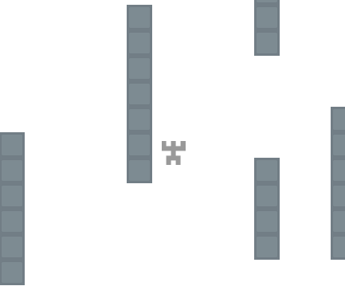

One of my coworkers introduced me to Quintus, a young Javascript engine that makes developing simple games a breeze. In this multipart tutorial I’ll be showing you how to combine Quintus with Socket.io to make a simple multiplayer game.
Installation and setup
Node.js
We’ll be using Node.js for our runtime environment. It’s super fast to pick up and start developing with, and works great for our multiplayer game. If you don’t yet have it installed, go to their website for the installation link.
Getting the proper node modules
Now that we have Node.js installed, let’s create the folder where our game will be located.
|
|
Once inside, we’ll create a package.json file, which will hold information about our Node.js application.
|
|
Now to install express and socket.io, which will handle the routing/server and multiplayer respectively.
|
|
By including the --save in our install calls, our package.json file will automatically update its dependencies object.
Now that we have our necessary modules, let’s set up our webserver with Express and Socket.io…
Let’s get to work!
Setting up our webserver
Create a file in your directory called app.js, and place this code inside.
|
|
Let’s go through what this file does.
Lines 1-4: Here we set up our Express server and also our Socket.io engine on top of that server.
Line 6: I plan to include all of our application code inside of a /public directory, and instead of inserting /public in front of all my files/requires, I tell Express to use /public as the home directory
Lines 8-10: Because our game’s going to be a single page application, our Express routing will be dead simple. In our case right now whenever we get a request to display whatever is on localhost:80 (Which is also localhost), our app will serve up the /public/index.html page (Note that we don’t have to include /public because of our code in Line 6)
Lines 12-13: Now we’ll tell our server to listen on port 80, and log a message to the console so we know everything is working just fine.
If we run our server now, we’re going to see an error page display complaining about an html module. That’s because we haven’t yet created our /public folder with the index.html file inside of it. Feel free to do it now, don’t worry about index.html being blank. If everything is working you should see a blank webpage! Soon enough, we’ll be turning this webpage into our Quintus game.
Setting up Quintus
Before we start, let’s import the javascript libraries we’ll be using.
In the public directory, create a lib folder which will hold the Quintus engine, RequireJS library, and any other libraries you might want to use in your games.
Download the Quintus library file here and save it inside the lib folder
Download the RequireJS library file here and save it inside the lib folder
Now, let’s go into our index.html file we created in the previous section and add some script tags to link to our future Quintus game.
|
|
Note: for anyone curious about the Socket.io script link, Socket.io will automatically intercept requests for socket.io/socket.io.js and send the appropriate response. More info here.
Now let’s make a folder called src in our public directory and create a new javascript file called game.js. This file will house our Quintus engine and communicate with Socket.io.
|
|
Lines 1-5: Here we create our Quintus engine. For those curious on what other libraries there are or how this works, I recommend the Quintus documentation
Line 7: Because we’re going to be making a top down style tag game, we need to disable gravity.
Lines 9-11: Sourcing our custom Quintus classes that we’ll be using in the game.
Line 14: Here we create our main game stage.
Line 15: We use a built in Quintus function to create the walls of our game from a JSON object. If you need a sample JSON object, here’s a download link
Line 17: Creating a new Player class (Which we’ll be making later on in this post) and inserting it into the stage with initial coordinates (100, 100).
Line 18: Telling our stage to center the view around the player class.
Lines 21-26: Listing all of the assets we’ll need for our game.
Lines 28-32: Here we tell the Quintus engine to load all of our spritesheets and create the arena scene we made earlier. I’ve included the download links for all of the images below:
{kind=link}
{kind=link}
Creating the Player class
The last thing we’ll have to do to have a basic Quintus game is create our Player class. In your src folder create a javscript file called Player.js.
|
|
Line 2: Here we create a new class Player that extends the Q.Sprite class.
Lines 3-6: The init function is called whenever we make a new Player class. Notice that we take a p parameter, which can be any Javascript object used to set specific properties (Like how we set the initial coordinates for the Player previously). We also can set variables like sheet, which defines what sprite our Player will be using, and saves us time from declaring it each time we make a new Player.
Line 8: Here we add some built-in Quintus functionality to our Player class. The 2d module let’s our class obey the law of physics and move around. The platformerControls module adds in basic support for moving left, right, and jumping (although we’ll be overriding the jumping later). Finally, the animation module will let us play different animations, which we’ll be using later to show the difference between the tagged players and the non-tagged players.
Line 10: The step function is called by the Quintus engine to update the Player class, and which we’ll be using to add some basic functionality to our Player class.
Lines 11-17: Since the platformerControls doesn’t fully work with our top down style game, we do it ourselves in the step function. Quintus by default provides mapping for the directional keys and more, so we can simply look at if the up or down arrow is being pressed, and adjust the y-velocity property of the Player accordingly. (Note: Any properties of a class are stored within its p object).
And that’s all there is to it! Now let’s run our game server and see if it works:
|
|
Then open up your web browser and go to localhost:8080. If everything’s working, you should see something like this:

Boom! Our player can move in all directions and collides with the walls. In the next part of this tutorial, we’ll start looking into integrating our Quintus game with Socket.io. Check it out here! Thanks for reading!